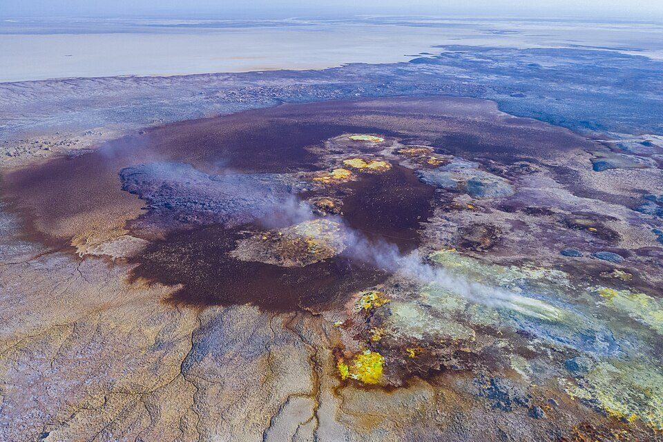
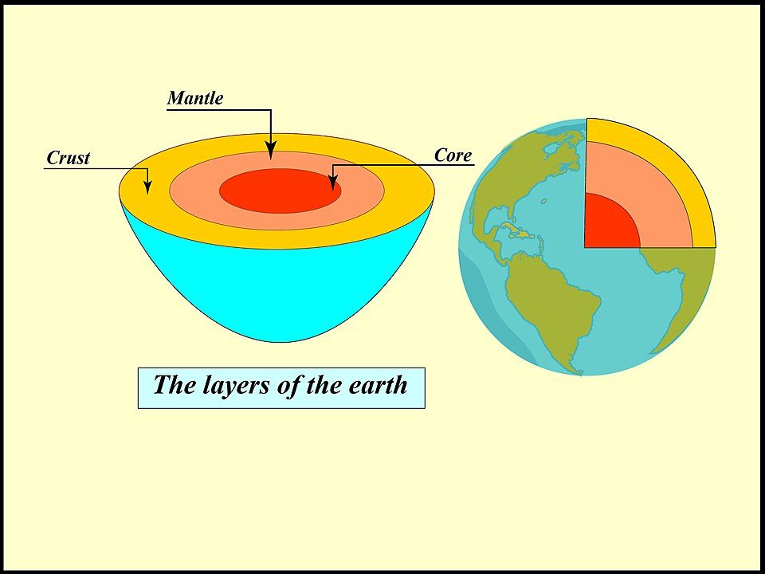
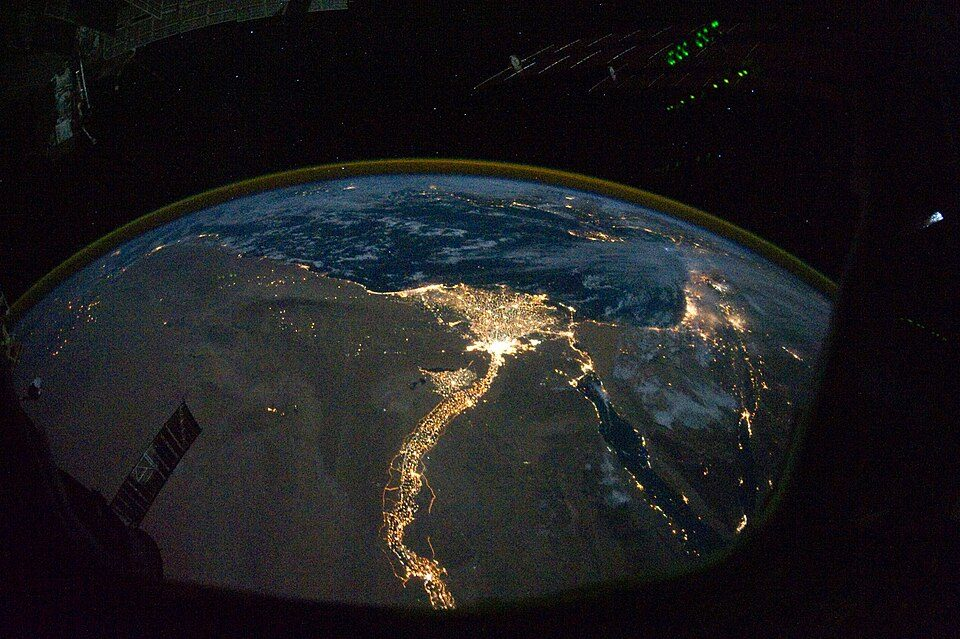
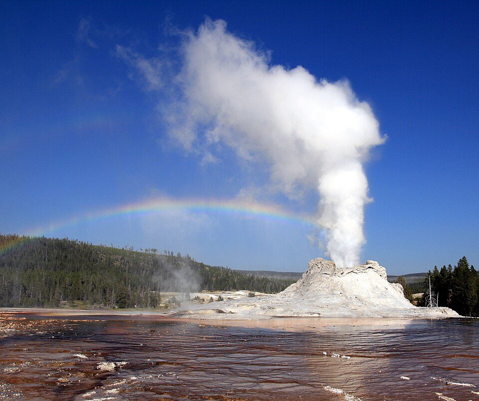

Planeta Tierra · 5 fichas
Curiosidades de la Tierra
Simuladores, récords del planeta, los lugares más extremos, fenómenos asombrosos y falsos mitos sobre la Tierra.
Nuestro planeta guarda récords que parecen inventados, lugares donde no se podría vivir más de unas horas y fenómenos que durante siglos se tomaron por magia. Aquí los reunimos, junto con simuladores para viajar al centro de la Tierra o comprimir toda su historia en un año, y los mitos que conviene desterrar.

Simuladores de la TierraViaja al centro de la Tierra, compara la energía de los grandes terremotos y descubre en qué día del año aparecerían los dinosaurios si la historia del planeta durara doce meses.
Récords del planetaEl punto más alto y el más profundo, el río más largo, el lago más hondo, la cascada más alta, el lugar más lluvioso y otros récords de la Tierra.- Lugares extremosDallol, el lago Natron, la Cueva de los Cristales, la puerta del infierno y otros lugares de la Tierra que parecen de otro planeta.

Fenómenos asombrososArcoíris, copos de nieve únicos, géiseres, tornados de fuego, lluvia de peces y el olor a tierra mojada: la ciencia detrás de las maravillas cotidianas. Falsos mitos sobre la TierraLa Gran Muralla vista desde el espacio, los rayos que no caen dos veces, el agua que gira al revés en el otro hemisferio y otros mitos sobre la Tierra.
Falsos mitos sobre la TierraLa Gran Muralla vista desde el espacio, los rayos que no caen dos veces, el agua que gira al revés en el otro hemisferio y otros mitos sobre la Tierra.